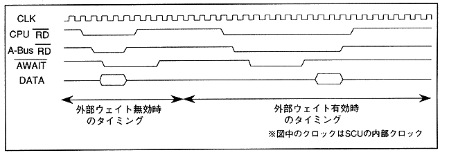

When accessing the CS0 space via A-Bus, a wait can be forced by an external signal, but this bit determines whether to enable or disable the processing. 1 means valid, 0 means invalid. When enabled, the wait continues while the external wait signal is low at the SCU wait sampling point. Figure 3.29 shows the timing chart difference between when external weights are disabled and when they are enabled.
Figure 3.29 Timing differences due to external wait valid bit setting
